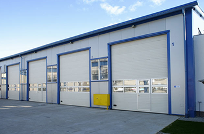

30 апреля 2020
Секционные подъемные ворота в современном мире стали неотъемлемой составляющей практически любого современного гаража. И этот факт не удивляет, так ка они способны выполнить основную задачу - охрана имущества - Вашего автомобиля. И это еще не все! Стоит только представить, что подъезжая к своему...